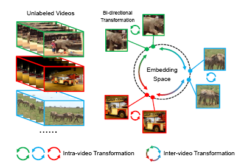
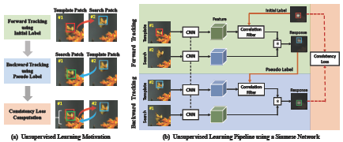
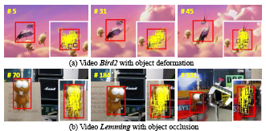

|
Ning Wang 王 宁
Researcher at Huawei, Ph.D. University of Science and Technology of China (USTC) Email: wn6149 (at) mail.ustc.edu.cn |
About Me
I am currently a computer vision Researcher in Huawei. I obtained my Ph.D. degree in University of Science and Technology of China (USTC) in 2021. My supervisors are Prof. Houqiang Li and Prof. Wengang Zhou. Prior to that, I received my B.S. degree from Tianjin University (TJU) in 2016.
My research interests are in computer vision, and I am currently working on cross-modal (vision + language) pretraining, image captioning, and visual object tracking.
Publications

|
Ning Wang, Wengang Zhou, Jie Wang, and Houqiang Li
Transformer Meets Tracker: Exploiting Temporal Context for Robust Visual Tracking IEEE Conference on Computer Vision and Pattern Recognition (CVPR), Oral, 2021 [pdf] [code] [bibtex] |
|

|
Ning Wang, Wengang Zhou, and Houqiang Li
Contrastive Transformation for Self-supervised Correspondence Learning AAAI Conference on Artificial Intelligence (AAAI), 2021. [pdf] [code] [bibtex] |
|
|
Ning Wang, Wengang Zhou, and Houqiang Li
Learning Diverse Models for End-to-end Ensemble Tracking IEEE Transactions on Image Processing (TIP), 2021. [pdf] [code] [bibtex] |
|
|
Ning Wang, Wengang Zhou, Yibing Song, Chao Ma, Wei Liu and Houqiang Li
Unsupervised Deep Representation Learning for Real-Time Tracking This is the Journal Version of UDT (CVPR 2019) International Journal of Computer Vision (IJCV), 2020. [pdf] [code] [bibtex] |
|
|
Ning Wang, Wengang Zhou, Qi Tian and Houqiang Li
Cascaded Regression Tracking: Towards Online Hard Distractor Discrimination IEEE Transactions on Circuits and Systems for Video Technology (TCSVT), 2020. [pdf] [code] [bibtex] |
|
|
Ning Wang, Wengang Zhou, Guojun Qi and Houqiang Li
POST: POlicy-based Switch Tracking AAAI Conference on Artificial Intelligence (AAAI), 2020. [pdf] [code] [bibtex] |
|
|
Ning Wang, Wengang Zhou, Yibing Song, Chao Ma and Houqiang Li
Real-Time Correlation Tracking via Joint Model Compression and Transfer IEEE Transactions on Image Processing (TIP), 2020. [pdf] [code] [bibtex] |
|

|
Ning Wang, Yibing Song, Chao Ma, Wengang Zhou, Wei Liu and Houqiang Li
Unsupervised Deep Tracking IEEE Conference on Computer Vision and Pattern Recognition (CVPR), 2019 [pdf] [code] [bibtex] |

|
Ning Wang, Wengang Zhou, Qi Tian, Richang Hong, Meng Wang and Houqiang Li
Multi-cue Correlation Filters for Robust Visual Tracking IEEE Conference on Computer Vision and Pattern Recognition (CVPR), 2018 [pdf] [code] [bibtex] |

|
Ning Wang, Wengang Zhou and Houqiang Li
Reliable Re-detection for Long-term Tracking IEEE Transactions on Circuits and Systems for Video Technology (TCSVT), 2018 [pdf] [code] [bibtex] |
|

|
Ning Wang, Wengang Zhou and Houqiang Li
Robust Object Tracking Via Part-Based Correlation Particle Filter IEEE International Conference on Multimedia and Expo (ICME), Oral, 2018 [pdf] [code] [bibtex] |
Academic Services
| IEEE Transactions on Pattern Analysis and Machine Intelligence (TPAMI) |
| IEEE Transactions on Image Processing (TIP) |
| IEEE Transactions on Multimedia (TMM) |
| Pattern Recognition (PR) |
| IEEE Signal Processing Letter (SPL) |
| IEEE Conference on Computer Vision and Pattern Recognition (CVPR), 2020, 2021, 2022 |
| IEEE International Conference on Computer Vision (ICCV), 2019, 2021 |
| European Conference on Computer Vision (ECCV), 2020 |
| AAAI Conference on Artificial Intelligence (AAAI), 2020, 2021 |
| International Joint Conference on Artificial Intelligence (IJCAI), 2021 |
| IEEE International Conference on Robotics and Automation (ICRA), 2020 |
Experiences
| July. 2021 - Present Computer Vision Researcher, Huawei |
| May. 2018 - Aug. 2018 Research Intern, Tencent AI Lab |
Awards
| 2021 Chinese Academy of Sciences (CAS) Presidential Scholarship (中科院院长优秀奖) |
| 2021 Outstanding Graduate Student of Anhui Province (安徽省优秀毕业生) |
| 2020 CVPR Outstanding Reviewer (CVPR杰出审稿人) |
| 2020 National Scholarship (博士生国家奖学金) |
| 2018 National Scholarship (硕士生国家奖学金) |
| 2013 National Scholarship (本科生国家奖学金) |